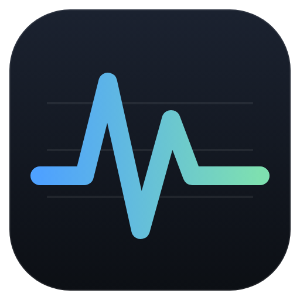
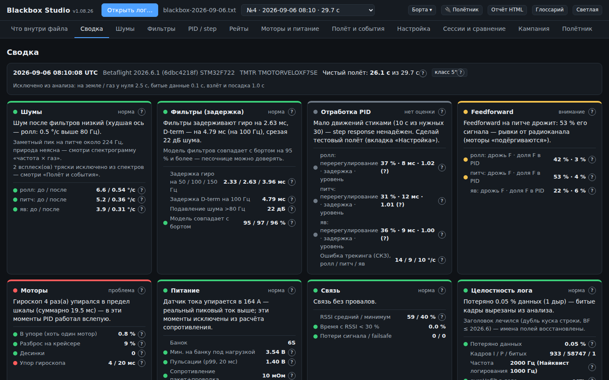

Blackbox Studio
Разбор и настройка FPV-квадрокоптера по блэкбоксу Betaflight.
Открыл лог — получил понятный ответ: что не так, что крутить и чем за это платишь.
Светофор по логуШумы, фильтры, PID, моторы, питание, связь — с объяснением каждой цифры.
Советы с CLIСначала механика, потом не больше двух изменений за полёт.
ПримеркаФильтры и рейты пересчитываются на твоём полёте ещё до вылета.
АвтотюнРазобрал → записал на борт по USB → слетал → разобрал снова.
1 Установка
| Файл | Что это |
|---|
BlackboxStudio-Setup-….exe | Установщик для Windows 10/11 — рекомендуется |
BlackboxStudio-Portable-….exe | Без установки, можно запускать с флешки |
BlackboxStudio-…-web.html | Тот же интерфейс в Chrome или Edge — для macOS и Linux |
Windows пишет «Система Windows защитила ваш компьютер»? Нажми
Подробнее → Выполнить в любом случае. Так Windows встречает любую новую
программу, у которой ещё нет «репутации».
2 Записать правильный лог
Проще всего: подключи полётник по USB без аккумулятора → вкладка Полётник →
Подключить → Подготовить запись лога. Программа покажет строки, запишет их по кнопке
и при необходимости откатит.
Вручную: частота записи не ниже 1.6 кГц (обычно 2 кГц), гироскоп до фильтров включён (на прошивках
до 4.5 — set debug_mode = GYRO_SCALED).
Как слетать для разбора (1–2 минуты)
- 20–30 с висения;
- несколько раз плавно газ от висения до 100 %;
- резкие движения стиком по ролу и питчу (на 30–60 % хода и обратно), пара флипов;
- пара резких сбросов газа с полного.
Сразу после посадки потрогай моторы: холодные, тёплые или горячие — это пригодится.
3 Разобрать лог
- Открыть лог… или перетащи файл в окно. Можно весь дамп флешки — программа покажет список логов.
- Сводка — светофор. У каждой цифры есть ?: что это, почему плохо, что крутить.
- Настройка — советы по порядку: сначала механика, потом изменения настроек и готовые строки CLI.

Сводка: «Главное» сверху, ниже — хватает ли данных в логе и карточки по разделам.
норма внимание
проблема нет оценки (мало данных)
Применить совет
- скопировать строки CLI в конфигуратор Betaflight → вкладка CLI → Enter; или
- На борт по USB… — программа сохранит бэкап, запишет и проверит значения; есть кнопка Откатить.
После изменения, которое ослабляет фильтры или поднимает D, — короткий полёт 20–30 с и потрогай
моторы. Горячие — откат.
Автотюн
Вкладка Автотюн: отметь пропы, моторы и ощущения → Разобрать полёт →
Сохранить полёт и записать на борт по USB. Слетай и повтори с новым логом. По одному изменению
за полёт; «нравится» — ничего не трогает; стало хуже — откат.
4 Тестирование: цикл из 3–5 полётов
- Открой лог → Сессии и сравнение → Сохранить как сессию. Программа спросит, что это за борт.
- Кампания → Начать кампанию для этого борта (цель — например, «Убрать пропвош»).
Новые сессии борта попадают в неё сами.
- Примени совет и слетай так же, как в прошлый раз: те же пропы и похожий заряд пакета.
- Открой новый лог, сохрани как сессию. В кампании отметь, какие моторы после полёта и как летает —
это самое ценное.
- Повтори 3–5 раз.
5 Что прислать
| Что | Где взять |
|---|
| Экспорт кампании (обязательно) | Кампания → Экспорт кампании → один файл .html.
В нём все полёты серии: настройки, метрики, советы, что применил, твои отметки, точность прогнозов. |
| Папка случая — если стало хуже или что-то сломалось | Сессии и сравнение → кнопка ⚠ в строке полёта →
опиши симптомы → Скачать папку случая (zip). |
| Скриншот — ошибка или непонятный текст | Пара слов: на какой вкладке и что ожидал увидеть. |
Отправляй на почту
mjsvyat@gmail.com
Тема письма:
Blackbox Studio: борт, например
Blackbox Studio: 5" 6S Mark4.
В письме коротко: рама, моторы и KV, пропы, число банок, версия Betaflight.
Новости и обновления — Telegram-канал
t.me/mjsvyat_fpv
Что внутри файлов
- В экспорте кампании — настройки полётника и его ID, но не сами логи.
- В папке случая могут быть сами логи (
before.bbl, after.bbl). Если в них пишется GPS, там будут
координаты полёта. Не хочешь их отправлять — удали эти файлы из архива.
6 Если что-то не так
| Полётник не виден в списке портов | Нужен драйвер: в Betaflight Configurator — «Установить драйверы» или ImpulseRC Driver Fixer.
Закрой конфигуратор — он может занимать порт. |
| «Подключён аккумулятор» | Настройки пишутся только при питании от USB. Отключи аккумулятор и нажми ещё раз. |
| Советы по фильтрам не появляются | Смотри «Хватает ли данных в логе» на Сводке: обычно не хватает газа до 100 % или частоты записи. |
| «Мало движений стиками» | Нужен полёт с резкими движениями по каждой оси — список на Сводке. |
Спасибо, что помогаешь! Летаем больше — крутим меньше.